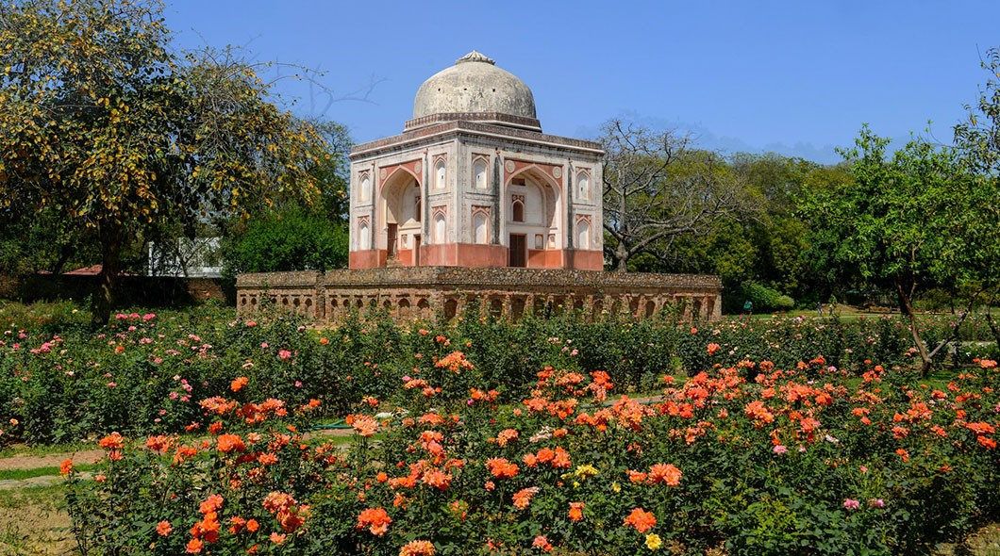

History
Learning Through Monuments.
Sunderwaala Burj
Post-1911, Maulvi Zafar Hassan meticulously documented Delhi's monuments, laying the foundation for his book, Monuments of Dehli. Sunderwaala Burj, named for its Persian roots where "Burj" meaning a huge building, earned the moniker "Sunder" or beautiful due to its exquisite decoration and calligraphy. In adherence to Islamic principles, the monument abstains from human depictions, featuring instead flower motifs creating an optical illusion. Arabic calligraphy adorns the walls, depicting the verse-surya juma of the Quran.

Reflecting Islamic tradition, Sunder Burj features a celestial-themed star ceiling within its confines, while multiple jalis ensure privacy and ventilation inside the structure. Additionally, Sunder Burj is adorned with a water channel inspired by the Persian Garden concept, seamlessly blending a bird's-eye view of the traditional four-part garden (chahar bagh) with graceful profiles of birds and trees. The architectural design of the water channel is meticulously crafted to evoke a soothing wave pattern, creating a calming sound effect.
Sunder Mahal
The Persian hasht-bahisht idea describes the mahal as having eight gates of paradise on four
corners and
four sides.
The construction of the mahal almost creates a replica of the eight gates of paradise mentioned
in the holy
Quran.
A chamber was intended to hold the burials but no actual graves were discovered
during the
restoration process,
therefore the chamber was closed.
However, demo graves were discovered on the terrace, indicating the presence of graves.
These markers were erected to reinforce the Islamic belief that tombs should be located directly
beneath the
sky.
Lakkadwaala Burj
Set amidst a rose garden with a commanding view of the park and lake, Lakkadwaala Burj derives its name from local lore associating it with a wood trader. Built on a raised platform along the Grand Trunk Road, commissioned by Sher Shah Suri in the 16th century, the monument served as a landmark for locals conducting business and trade.
An unusual feature of this monument that is absent from other tombs in Sunder Nursery is that there is an attached room in the Burj, believed to be the 'caretaker's room,' reflecting the desire for perpetual care of the burial chamber. Like Sunder Burj, Arabic calligraphy graces the monument, narrating passages from the holy Quran for both spiritual and aesthetic enrichment.
.